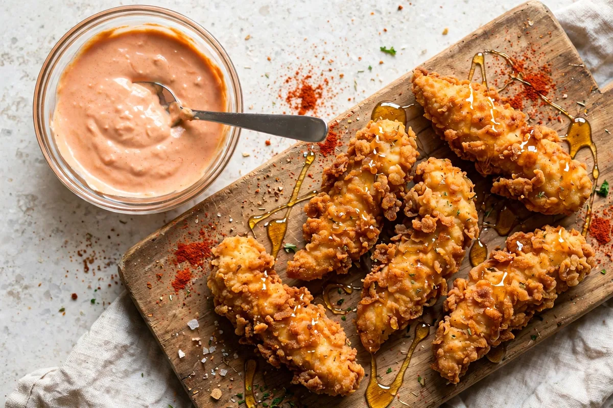

How to Make Dave's Hot Chicken Sauce (Copycat)
First, the honest frame: Dave's does not publish its sauce recipe. Dave's Sauce is the chain's signature house sauce, it is proprietary, and every recipe on the internet for it, this one included, is a copycat. What a good copycat can do is work from evidence, and the best piece of evidence is Dave's own allergen guide, which lists Dave's Sauce as containing Egg and Soy, the exact fingerprint of a mayonnaise base (egg yolk, soybean oil). The top-ranking copycat recipes independently converge on the same core: mayo, chipotle, honey, acid, garlic, paprika. This post builds its version on that core, labels it a Dave's Hot Chicken sauce copycat throughout, gives you a ladder to match your Dave's spice level, and untangles the mix-up that sends half the internet to a completely different sauce. Here, in full, is how to make Dave's Hot Chicken sauce on the evidence available.

Copycat, labelled as one5 min prep + 30 min chillWhat Is Dave's Sauce?
Dave's Sauce is the creamy, smoky, slightly sweet dipping sauce served with Dave's sliders and tenders and sold as a side in its own right, up to a 4 oz large. It is the sauce this Dave's Hot Chicken sauce recipe post is about, and everything below answers how to make Dave's Hot Chicken sauce as closely as the evidence allows.
What is in Dave's Hot Chicken sauce, officially? Dave's answers that only through its allergen guide: Egg and Soy, nothing else among the major allergens, notably no milk for the sauce itself (a claim on some fan pages that the guide contradicts). That short listing is the recipe detective's whole case. Egg plus soy, in a creamy sauce, is mayonnaise until proven otherwise, and the flavour reporting lines up behind it: creamy and tangy first, a chipotle-style smoke underneath, sweetness in the middle, and a mild-to-medium warmth at the end. So how do you make Dave's Hot Chicken sauce without the formula? You rebuild the profile from the evidence, which is what copycat cooking is, and you say that is what you are doing.
One clarification before the whisk comes out, because the searches tangle three brands: this is the sauce from Dave's Hot Chicken, the Nashville-style chicken chain. It is not Famous Dave's barbecue sauce and not Dave's Gourmet bottled hot sauce; those are different companies with similar names, and their recipes live elsewhere. And a Dave's hot sauce recipe, meaning a bottled cayenne sauce, is a different thing again; the bonus section at the end covers the hot coating that sometimes gets confused with this one. Half the searches even drop the apostrophe and type daves where the brand writes Dave's; it is the same sauce either way, and the method for how to make Dave's Hot Chicken sauce does not change with the punctuation.
Dave's Sauce vs the Nashville Coating: Two Different Sauces
Half the pages ranking for a Dave's Hot Chicken sauce recipe are making something else entirely: the Nashville hot chicken coating, the cayenne-butter paste brushed onto the chicken itself. Both are worth having; they are not interchangeable.
| Dave's Sauce (this post's recipe) | Nashville hot coating (bonus, below) | |
|---|---|---|
| What it is | Creamy dipping sauce, served alongside | Spiced butter/oil paste, brushed onto the chicken |
| Base | Mayonnaise (Egg + Soy, per Dave's allergen guide) | Butter or hot frying oil + cayenne |
| Heat source | Chipotle, mild-to-medium | Cayenne, as hot as you dare |
| Method | Whisk and chill, no cooking | Melt, whisk, brush on hot chicken |
Decide which sauce you mean before you shop, because how to make Dave's Hot Chicken sauce depends entirely on the answer; the recipe below is the dip.
The Copycat Recipe
The Dave's Hot Chicken sauce ingredients, in the ratio this kitchen settled on after the evidence: the convergent core of the top copycats, anchored to the allergen clue. Yield about 3/4 cup, roughly six servings of 2 tablespoons.
| Ingredient | Amount | What it does |
|---|---|---|
| Mayonnaise | 1/2 cup | The base; the Egg + Soy in Dave's allergen listing points here |
| Chipotle sauce (smooth, from chipotles in adobo) | 2 tbsp | Smoke and the main heat |
| Honey | 1 tbsp | The sweetness in the middle of the profile |
| Brown sugar | 1 tsp | Depth under the honey; optional but better |
| Apple cider vinegar (or pickle juice) | 1 tsp | The tang that keeps it from tasting flat |
| Garlic powder | 1/2 tsp | Savoury floor |
| Paprika (smoked if you have it) | 1 tsp | Colour and a second layer of smoke |
| Salt and black pepper | A pinch each | Seasoning; the mayo brings some already |
How to make Dave's Hot Chicken sauce, step by step:
Put everything in a bowl. If your chipotle is chunky (peppers in adobo rather than a smooth sauce), blend it smooth first; lumps are the one texture the real sauce never has.
Whisk until uniform and the sugar has dissolved, about a minute. The colour should land pale orange-pink; much darker means a heavy hand with the chipotle.
Against the profile (creamy, tangy, sweet, warm): more honey for sweet, more vinegar for tang, more chipotle for heat. Adjust in teaspoons, not tablespoons.
Cover and refrigerate. This step is the recipe, not a serving suggestion: the flavours marry in the cold and the sauce thickens to dipping body. Two hours is better; overnight is best, and skipping the chill is the most common way a first attempt at how to make Dave's Hot Chicken sauce tastes off.
That is the whole of how to make Dave's Hot Chicken sauce at home: seven core ingredients, four steps, no cooking. The Dave's Hot Chicken dipping sauce recipe searches end at the same bowl; this is the dip, and the dip is the point. Estimated nutrition, from the ingredients rather than any official card: about 150 calories and 16 grams of fat per 2 tablespoons, in line with Dave's own figure of 150 calories for its 0.8 oz sauce packet.
Match Your Dave's Spice Level
The base recipe sits at Dave's Mild-to-Medium warmth. Once you know how to make Dave's Hot Chicken sauce, scale the chipotle and cayenne to stand next to the chicken level you actually order; the full ladder is in the spice levels guide.
| Your Dave's level | Chipotle | Cayenne |
|---|---|---|
| Not Hot / Lite Mild | 1 tsp (flavour, not heat) | None |
| Mild | 1 tbsp | None |
| Medium (the base recipe) | 2 tbsp | None |
| Hot | 3 tbsp | 1/4 tsp |
| Extra Hot | 3 tbsp | 1/2 tsp |
| Reaper-leaning | 3 tbsp | 1 tsp, and know cayenne still is not Reaper |
How to make Dave's Hot Chicken sauce without chipotle sauce, since that search exists too: swap the chipotle for 1 tablespoon of a Louisiana-style hot sauce plus an extra 1/2 teaspoon of smoked paprika. The heat arrives; the smoke mostly arrives; the flavour sits a half-step further from the original, which is the honest price of the swap. Greek yogurt or sour cream can stand in for part of the mayo for a lighter bowl, at the cost of tang and body; full-fat mayo is what the allergen evidence and the flavour both point to.
Serving, Storage and Troubleshooting
Serve it where Dave's serves it: with tenders and sliders first, then fries, the cauliflower bites, and any sandwich or wrap built in Dave's style. If you are building the whole meal, the copycat chicken sandwich route is tenders on a potato bun with slaw, pickles and this sauce; the sandwich itself is a build, not a sauce question.
The three cards below cover storage, the problems a first attempt at how to make Dave's Hot Chicken sauce usually hits, and why making it ahead is the professional move.
Refrigerated in a sealed container, the copycat keeps about 5 days, the consensus of the top recipes and the safe answer for a mayo-based sauce; claims of two weeks are the outlier, not the standard. Do not freeze it: mayonnaise splits on thawing and the texture never comes back. Stir before serving; it firms up in the cold.
Spicy: whisk in more mayo, a teaspoon at a time, and a little extra honey. Sweet: vinegar, a drop at a time. Tangy: honey and a pinch of sugar. Thin: it thickens as it chills, so judge it cold, and add mayo if it still runs. Bland: salt, then garlic, then chipotle, in that order.
Yes, and do. Make-ahead is built into how to make Dave's Hot Chicken sauce: it is better on day two than in the first hour, which makes it the rare recipe that rewards the organised. Make it the night before the chicken, not during.
Bonus: the Nashville-Style Hot Coating
If what you actually wanted was the fiery paste on the chicken (the other Dave's Hot Chicken sauce recipe intent), here it is, clearly separated from Dave's Sauce: this is a Nashville-style coating in the generic tradition, not a Dave's dip and not served in a cup.
Melt 1/2 cup of butter (or reserve 1/2 cup of the hot frying oil, the traditional carrier). Whisk in 1 tablespoon of cayenne, 1 tablespoon of brown sugar, 1 teaspoon of paprika, 1/2 teaspoon of garlic powder and 1/2 teaspoon of salt until the sugar dissolves. Brush or spoon it over fried chicken the second it leaves the fryer, while the crust can drink it. Scale the cayenne to your level and keep it off anything you plan to dip; the coating is the heat, the creamy sauce above is the relief from it, and a proper Dave's-style plate uses both, on purpose. Together, the dip and the coating are the complete answer to how to make Dave's Hot Chicken sauce in both of its searched senses.
Source note: Dave's Sauce's status, serving formats and Egg + Soy allergen listing are from Dave's official material as captured in this site's allergen research. Every quantity in both recipes is this post's own copycat formulation, built from the convergent core of the top-ranking copycat recipes; the real formula is proprietary and unpublished, and nothing here claims otherwise.
Frequently Asked Questions
What is Dave's Hot Chicken sauce made of?
Officially, Dave's only answers through its allergen guide: Dave's Sauce contains Egg and Soy, the fingerprint of a mayonnaise base, and the recipe itself is proprietary. The copycat consensus, which this recipe follows, is mayonnaise plus chipotle, honey, an acid (vinegar or pickle juice), garlic and paprika, whisked and chilled. Anyone printing an 'official ingredient list' beyond the allergens is inventing it.
What does Dave's Hot Chicken sauce taste like?
Creamy and tangy first, with a chipotle smoke underneath, a clear thread of sweetness, and a mild-to-medium warmth that builds rather than bites. It is a dipping sauce in the ranch-and-comeback-sauce family, not a hot sauce: the heat is a supporting actor. That profile is the target whenever you set out to learn how to make Dave's Hot Chicken sauce, and the copycat in this post is built to land on exactly it.
Is Dave's Hot Chicken sauce spicy?
Mildly. The sauce is warm, not hot, it is served with every spice level including Not Hot, and its job at the table is partly to cool the chicken down. In the copycat, the base batch sits around Dave's Mild-to-Medium; the ladder section scales it from a teaspoon of chipotle (flavour only) up to a Reaper-leaning version with cayenne. That range is the point of learning how to make Dave's Hot Chicken sauce yourself: the heat is yours to set.
How long does homemade Dave's sauce last in the fridge?
About 5 days, sealed and refrigerated, which is the consensus of the credible copycat recipes and the food-safe answer for a mayonnaise-based sauce. One or two sites claim two weeks; treat that as an outlier. It cannot be frozen (mayo splits), and it is at its best on day two, after the flavours have married. That patience is part of how to make Dave's Hot Chicken sauce well, not an optional extra.
Can I make Dave's sauce without mayonnaise?
You can make a sauce, with Greek yogurt or sour cream standing in, and it will be tangier, thinner and lighter. But the evidence says the original is mayo-based (Egg and Soy in Dave's own allergen guide), so a mayo-free version is a variation, not a copycat. A half-and-half swap (half mayo, half yogurt) is the closest compromise.
Is Dave's Sauce gluten free, and what allergens does it contain?
Per Dave's official allergen guide, Dave's Sauce contains Egg and Soy, and no milk or wheat is listed for the sauce itself; the guide also warns that shared kitchens mean nothing is guaranteed allergen-free, and the chicken it dips is breaded regardless. The copycat above mirrors the Egg + Soy profile through its mayo base; check your own ingredients' labels for the rest.
Can I buy Dave's Sauce bottled?
Dave's sells the sauce as a menu item, in packets, sides and a 4 oz large, not as a bottled retail product in any listing this research found. That is precisely why the copycat exists: the fridge-door version has to be made, and a seven-ingredient guide to how to make Dave's Hot Chicken sauce is easier than hunting for a bottle that does not exist.
How do you make Dave's Hot Chicken sauce spicier without ruining it?
Raise the chipotle first (it brings smoke with its heat), then add cayenne in 1/4-teaspoon steps, tasting cold each time, because heat reads stronger once the sauce warms on hot chicken. Keep the honey where it is: the sweetness is load-bearing, and a hotter batch with the same honey stays balanced, while a hotter batch with less turns harsh.
More Dave's Guides
Browse the rest of the Dave's guides.